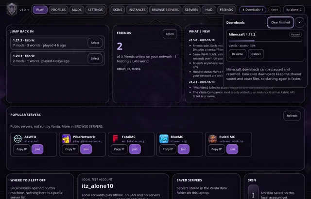
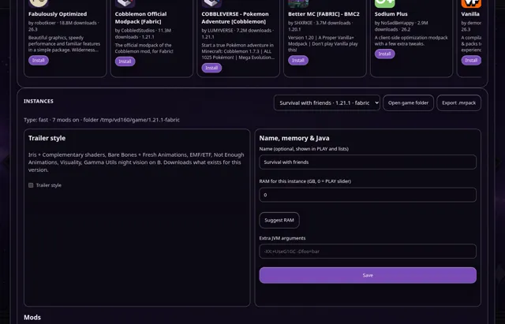
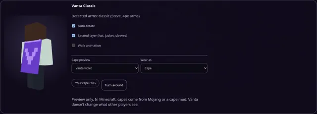
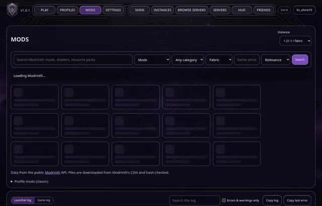

News · · v1.6.2
Vanta 1.6.2: a downloads panel, instance names and cape previews
Pause, resume or cancel Minecraft downloads from one panel, give your instances their own names, and try capes and elytra on the 3D skin.
Vanta 1.6.2 is out for Windows and macOS. Press Update in Vanta's top bar to get it; your accounts, worlds and mods are not touched.
Downloads panel
A Downloads button appears in the top bar whenever Vanta is downloading something: Minecraft versions, mods, modpacks, Java or a Vanta update. Minecraft downloads can be paused, resumed or cancelled. Cancelling removes only the unfinished version folder and keeps the shared sound and asset files, so starting again is faster.

Name your instances
In INSTANCES › Name, memory & Java, give an instance a name like “Survival with friends”. The name shows in PLAY, on the dashboard and in lists, next to the version.

Cape and elytra preview
SKINS can now show a cape or elytra on the 3D player. Pick a built-in design or load your own 64×32 cape PNG, and use Turn around to see the back. This is a preview only: in Minecraft, capes come from your official account or a cape mod, and Vanta doesn't change what other players see.

Smoother loading and clearer messages
Lists show loading placeholders instead of “Loading…”. Empty lists say what to do next. Errors are in plain words, and if Vanta's background service stops answering, a banner says so and reconnects on its own.

Every select, search box and switch now has an accessible name, checked with axe-core on every tab. Quick jump (Ctrl+K) adds Downloads, Search the log, Cape preview, Rename instance and Favourite servers.
Also fixed: the What's new popup now fetches fresh notes right after an update, and has built-in notes when you're offline.